Training
Teaching inference hardware to learn
Originally published on Substack. Mirrored here with the subscription widgets removed; text and figures unchanged.
March 2026
In Part 1 we cracked the ANE’s private APIs: compile, load, evaluate, all without CoreML. In Part 2 we benchmarked the hardware. 19 TFLOPS FP16 at 2.8 watts, 6.6 TFLOPS/W efficiency, a 32MB SRAM cliff.
This post is about what happened next. We trained a transformer on the ANE.
Not fine-tuning through CoreML. Full forward pass, full backward pass, gradient computation, Adam optimizer updates. 109M parameters learning from scratch on hardware Apple built for inference. Then we scaled it to Qwen3-0.6B (596M parameters, grouped-query attention).
It took three iterations to get here. Each one hit a different wall.
The math
A transformer training step has three phases. Forward: push tokens through the network, compute a loss. Backward: propagate gradients back through every layer. Update: adjust weights using the gradients.
For a single transformer layer, the forward pass does:
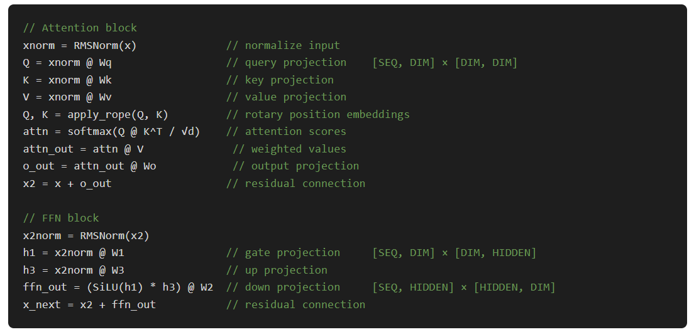
The backward pass is roughly 2× the compute of the forward. You need gradients for both the activations (to propagate backward) and the weights (to update them). For Stories110M (12 layers, dim=768, hidden=2048, seq=256), one training step runs about 1.7 GFLOP of matmuls.
So how much of this can actually run on the ANE?
What runs on ANE, what doesn’t
The ANE executes compiled computation graphs. You submit a MIL program, it runs the whole thing atomically. There’s no branching, no indexing by a runtime value, no in-place mutation. This creates a hard split in the training loop:
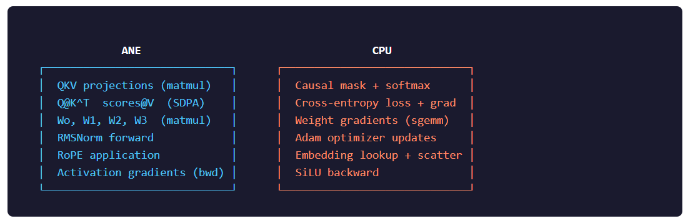
The ANE has a native SDPA op, but it ignores the causal attention mask. Output is identical with and without it. So we decompose attention into three dispatches: Q@K^T on ANE, mask+softmax on CPU, scores@V on ANE.
Weight gradients stay on CPU because they’re large outer products (dW = activation^T @ gradient) that we can overlap with the next layer’s ANE work using GCD. Adam stays on CPU because it mutates weights in-place.
Pipeline 1: Static weights (the naive approach)
The first working pipeline baked weights directly into the MIL programs as const() tensors. Every weight matrix was a compile-time constant embedded in the ANE binary.
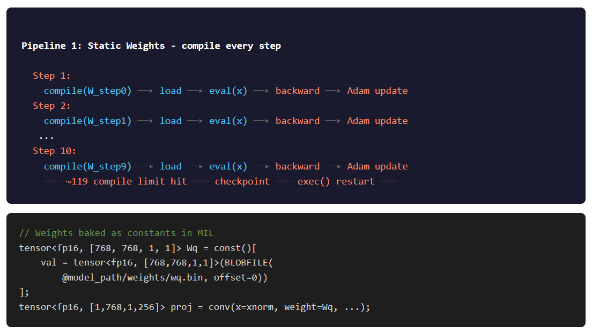
This means: every time weights change (i.e., every Adam update), you recompile all the kernels. For 12 layers × 5 weight-bearing kernels = 60 compiles per batch, plus 12 weight-free kernels for the backward SDPA. 72 total.
It worked. 106.7 ms/step, roughly 1.6 TFLOPS combined. But the ANE leaks something (memory, file descriptors, kernel handles, unclear which) at about ~119 compiles per process. After that, compiles start failing.
The fix: exec(). After every 10 training steps (720 compiles), checkpoint to disk and restart the process:
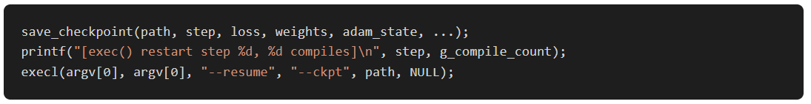
Pipeline 2: ANE-offloaded ops
Before tackling compile overhead, we tried moving more work onto the ANE. The classifier forward (a 32000-output matmul), softmax, and RMSNorm backward were candidates.
This work came from Vipul Divyanshu‘s PR #19. He built a C-callable bridge API for ANE access and offloaded the classifier, softmax, and RMSNorm backward kernels. The classifier: 32000 output channels as a 1×1 convolution. Softmax as a standalone ANE kernel. RMSNorm backward with 24 separate kernels (2 per layer). Per-step time dropped to 91.8 ms, 14% faster. But the compile count went from 72 to 86 per batch, making the compile overhead even worse.
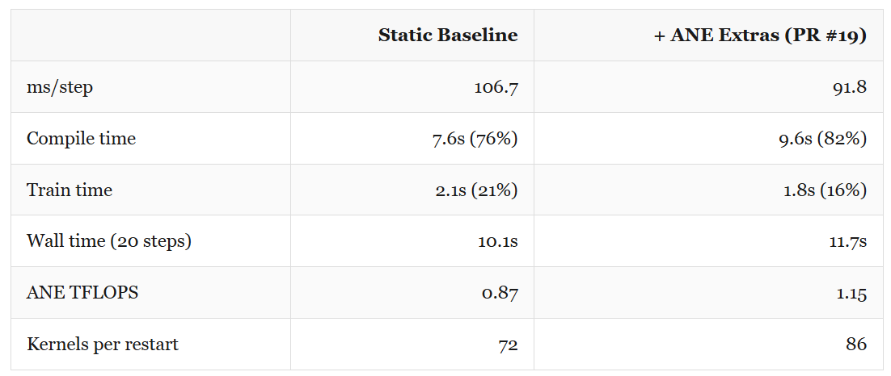
More ANE utilization, worse wall time. The compile overhead ate the per-step gains. We needed to kill recompilation entirely.
Pipeline 3: Dynamic weights
Instead of embedding weights as constants in the MIL graph, pass them as input data alongside the activations. Pack both into the spatial dimension of a single IOSurface.
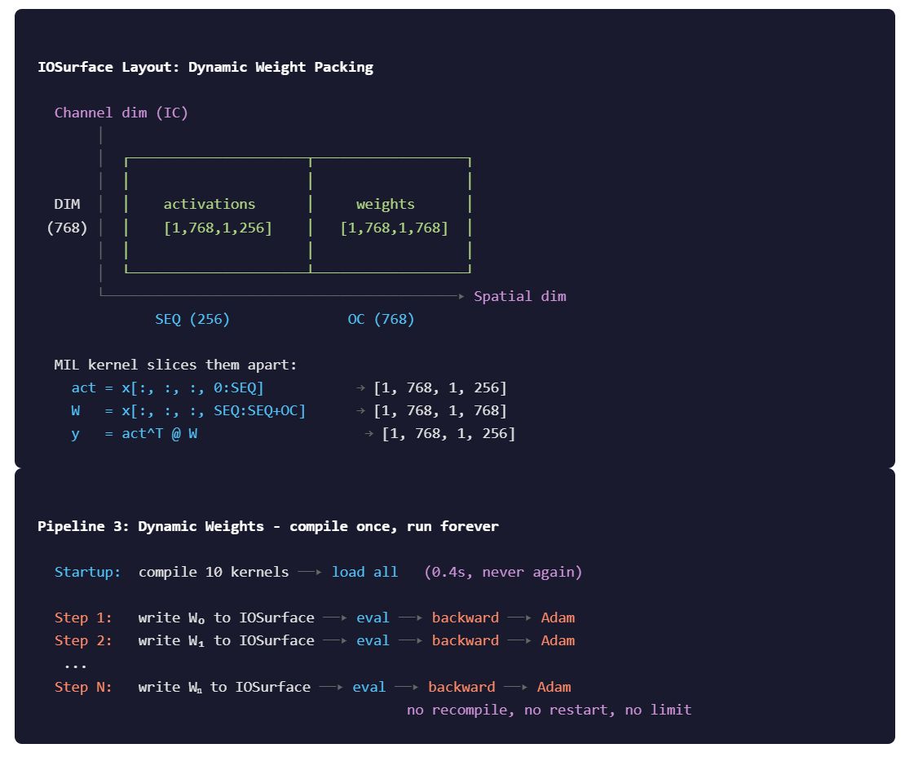
Now the kernel is compiled once. Weights change every step, but they’re just different data written to the same IOSurface. No recompilation, no exec() restarts, no ~119 limit.
The dynamic pipeline compiles 10 kernels at startup (about 0.4 seconds) and never compiles again:
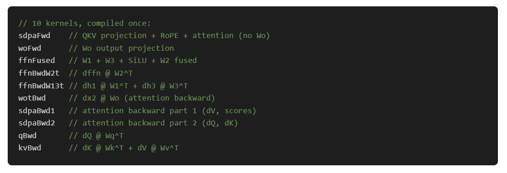
Every layer reuses the same 10 kernels. We just write different weights into the IOSurface before each dispatch. Per-layer IOSurfaces are pre-allocated and the weights are staged once before the training loop starts, then updated only after Adam.
The tradeoff: dynamic weight packing adds CPU overhead for the fp32→fp16 conversion and interleaved write into the spatial dimension. And the ANE can’t fuse the weight load with the computation the way it can with baked constants. But the elimination of recompilation dominates everything.
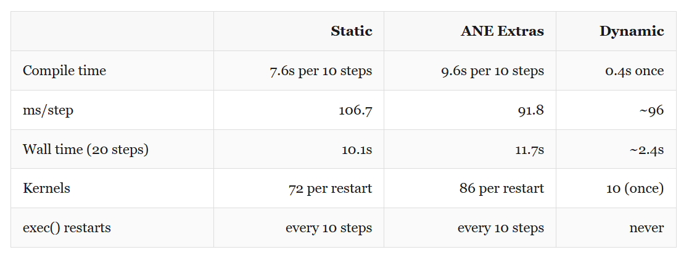
Dynamic is now faster per step too (96 vs 107 ms) and 4× faster in wall time at 20 steps. At 1000 steps, static would spend over 12 minutes just compiling.
The bugs that almost killed it
Two bugs cost lot of time and at least couple of days of head scratch debugging through backward passes and checking Math.
Bug 1: FP16 gradient underflow
Loss would plateau at ~5.5 and refuse to move. Only the embedding gradient (computed on CPU in fp32) showed any learning signal. Every ANE-computed gradient was effectively zero.
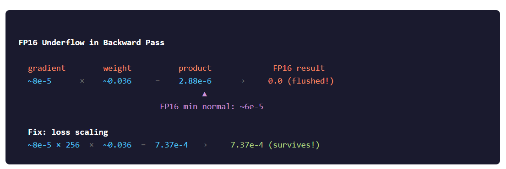
Fix: loss scaling. Multiply the loss gradient by 256 right after cross-entropy, before it enters the backward pass. All subsequent gradients inherit the scale factor through the chain rule. Divide it back out before the Adam update:
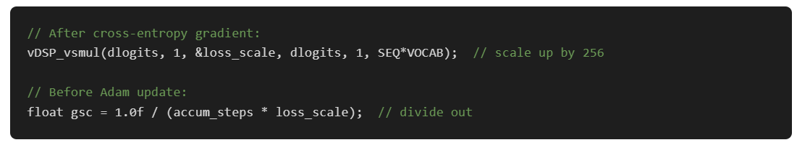
After these three fixes, loss dropped from 9.11 to 1.02 over 50K steps (~9.3 hours, from scratch). The model started generating coherent children's stories by around step 5K.
Bug 2: Transposed weight staging
This one was worse. The dynamic matmul kernel computes result = W_staged^T @ activation. For the forward pass, we want Wq @ x, so we stage transposed Wq. The kernel un-transposes it and the math works out.
For the backward pass, we want Wq^T @ gradient. So we stage the original (non-transposed) Wq. The kernel transposes it again and we get what we need.
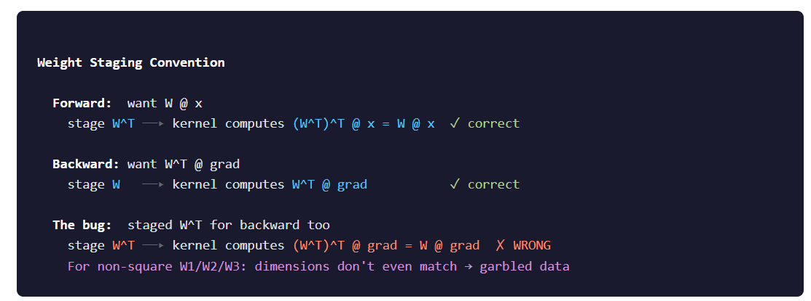
The symptom was identical to bug #1: loss plateau. But this time it was wrong gradients, not zero gradients. The only hint was that embedding still learned (it’s on CPU, no staging involved).
DeepNet residual scaling
With both bugs fixed, training from scratch still diverged for deep networks. Activations grew exponentially through the residual connections. The fix is from the DeepNet paper: scale residual additions by α = 1/√(2N) where N is the layer count:
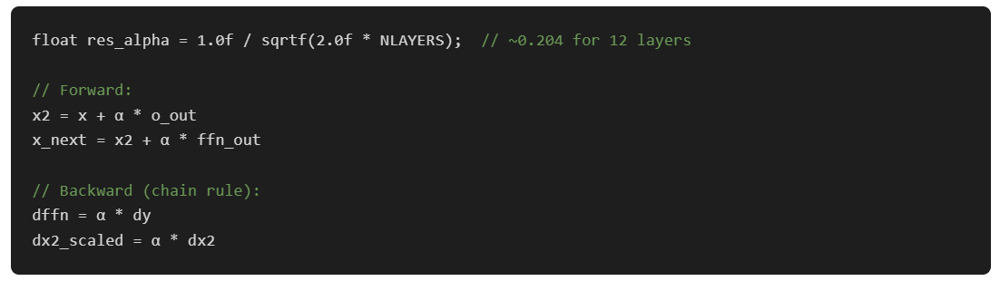
After these three fixes, loss dropped from 9.11 to 1.02 over 50K steps (~1.3 hours, from scratch). The model started generating coherent children's stories by around step 30K.
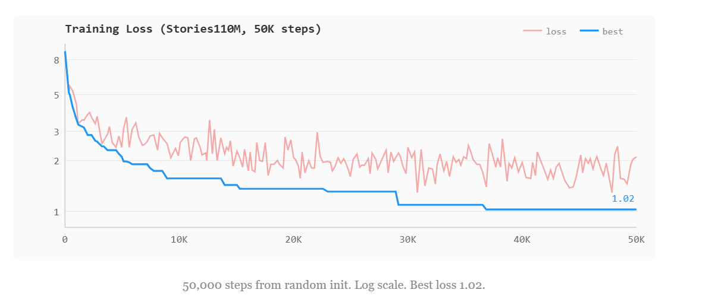
What it writes
Generated text from the Stories110M checkpoint at step 28,600 (loss 1.14), sampling with temperature 0.8 and top-k 50:
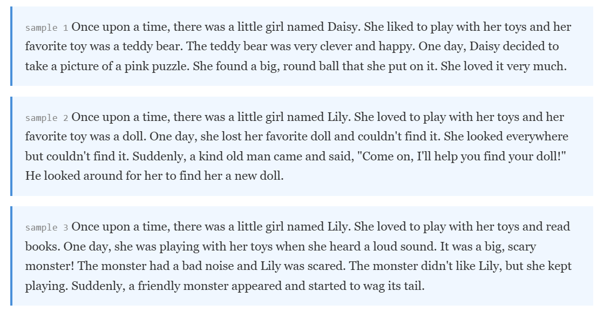
One thing we ran into: the model trains on about 9,200 unique tokens from TinyStories out of the full 32K Llama 2 vocabulary. With plain temperature sampling, the ~23K unused tokens still get small but nonzero logit values, and occasionally get sampled. Once one garbage token enters the context, the model goes out-of-distribution and cascades. Top-k filtering (k=50) restricts sampling to the tokens the model actually learned, and the problem goes away entirely.
Scaling to Qwen3-0.6B
Stories110M is a toy model. 12 layers, 768 dim, every head the same size. Qwen3-0.6B is real: 28 layers, 1024 dim, 16 query heads, 8 KV heads, head_dim=128.
Grouped-query attention (GQA) means Q_DIM = 16×128 = 2048 while DIM = 1024. The attention output lives in a 2048-dimensional space even though the model dimension is 1024. This broke several assumptions.
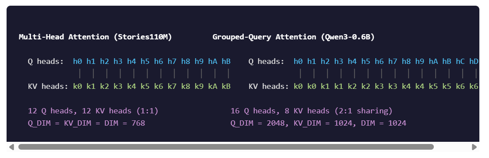
The kernel split was the main change. In Stories110M, one kernel handles the full SDPA including the Wo projection, because everything is the same dimension. In Qwen3, the SDPA output is 2048 channels but Wo maps it back to 1024. Different IOSurface sizes, so they become separate kernels. Same story for the backward: qBwd operates on Q_DIM=2048 while kvBwd operates on KV_DIM=1024.
GQA also means the backward pass through attention needs K and V tiled from 8 heads to 16 heads (to match Q), then the resulting dK, dV gradients need to be reduced back from 16 to 8. These tile/reduce operations happen on CPU between ANE dispatches.
596M parameters, 28 layers, ~416 ms/step. Loss went from 9.22 to 8.58 in the first 20 steps. Gradient is flowing.
The build system
Multiple architectures meant we couldn’t hardcode dimensions. Per-model header files, selected at compile time:
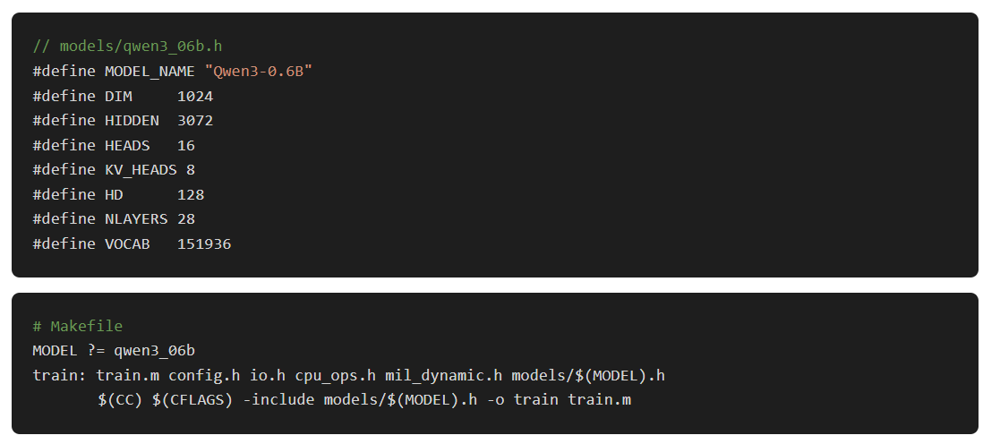
Everything else (weight sizes, IOSurface layouts, MIL kernel shapes, GQA ratios) is derived from these 7 defines. Add a new model by writing a 15-line header file and running make MODEL=mymodel.
What it looks like
The dashboard (built with Python’s blessed library) shows live training metrics, loss curves in braille-art, ANE/CPU power draw from powermetrics, and system memory usage. It parses stdout from the training binary and plots everything in the terminal.
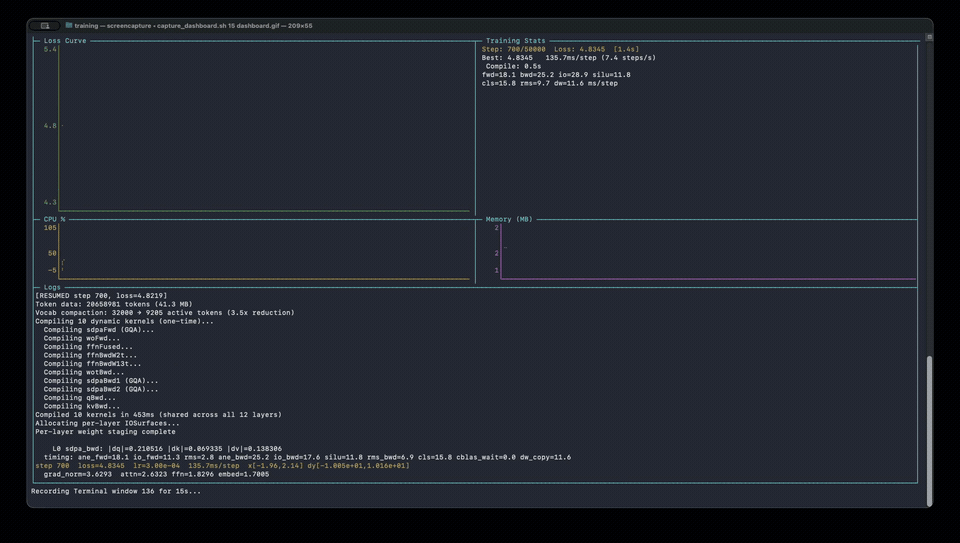
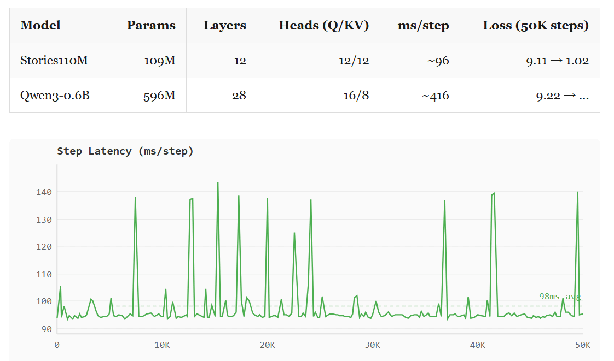
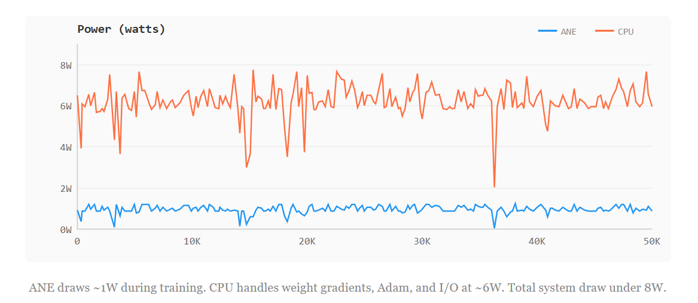
~96 ms/step on Stories110M at 2.8W. Training the same model on the M4’s CPU cores would draw 15-20W for similar throughput. The ANE wins on watts, not speed.
What we learned
Compilation is the bottleneck, not compute. 91 ms/step with static weights is fine throughput. But the software stack was designed for inference: compile once, run forever. Training broke that. The dynamic weight pipeline works around it, but a real training API would let you update weight buffers without recompiling.
FP16 is fine for forward, dangerous for backward. The ANE does everything in FP16 internally. Forward activations stay in range. Backward gradients are products of small numbers, and FP16 eats them. Loss scaling isn’t optional.
The hardware doesn’t care that it’s “inference only.” The ANE runs computation graphs. A backward matmul is just another matmul. The constraint is the software, not the silicon. Apple didn’t build a training API, so we did.
What’s next
Some of what’s happening next:
Mega-kernel layer fusion. Luís benchmarked fusing full transformer layers into a single MIL program. 3–4× forward speedup. The bottleneck is ~160μs XPC overhead per dispatch, not compute. 12-layer mega-kernel: 5081μs vs 15227μs for 24 separate evals. Weights are still
const()so you’d need gradient accumulation + double-buffered compilation. 4-layer partial fusion looks like the sweet spot, 7.7× with manageable compile times.Community benchmark dashboard. Submit your contributions to issue #3 on the repo
Beyond training. thebasedcapital built ane-infer (hybrid ANE+Metal, 32 tok/s on Qwen3.5-2B) and ane-synth (MIDI neural synth, 157μs per buffer, 79× real-time, 8-voice polyphony).
Thank you
Part 1 was just me poking at private frameworks on an M4 Mac Mini I’d picked up. I did not expect any of this. The github repo is now quite popular and I’m glad folks are finding good usecases out of it.
Vipul Divyanshu (PR #19) built the bridge API and offloaded classifier/softmax/RMSNorm backward to ANE. That’s Pipeline 2 above.
TastyHeadphones (#17) fixed token sampling underflow on short datasets. Guitared (#20) fixed the dashboard sudo hang.
Steve Kromer (#27) kept benchmarks working when Apple changed the compile API in macOS 26.
Nabbil Khan (#29) fixed the hardcoded paths that broke the repo for everyone whose directory layout wasn’t mine.
alvgeppetto-debug (#31) and layla (#34) on correctness fixes and docs.
And Luís for the mega-kernel fusion research, Erik for the community benchmark dashboard, thebasedcapital for building an inference engine and a neural synth on top of this.